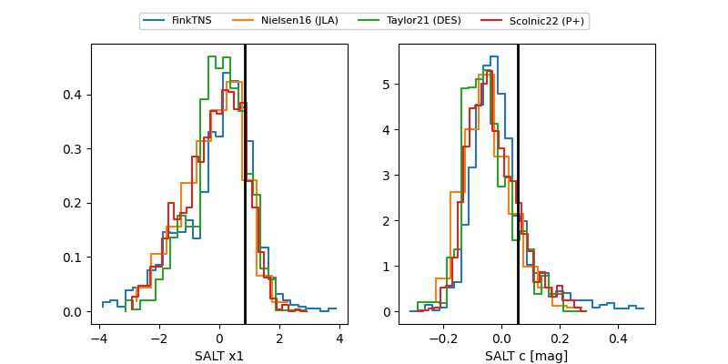

FINK: ZTF25abqldog
Lasair: ZTF25abqldog
ALeRCE: ZTF25abqldog
TNS: 2025xkk
YSE: 2025xkk
ZTF25abqldog (ztf,fink)
2025xkk (tns,yse)
equatorial (ra, dec) = (350.8100,-2.28308)
galactic (l, b) = (78.8142,-57.39490)

last atlasc=19.18, ztfg=19.45, ztfr=19.27
1 atlasc, 8 ztfg, 9 ztfr detections